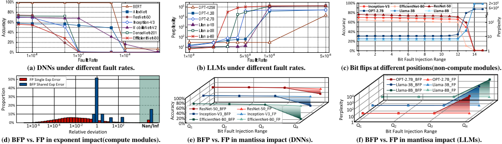
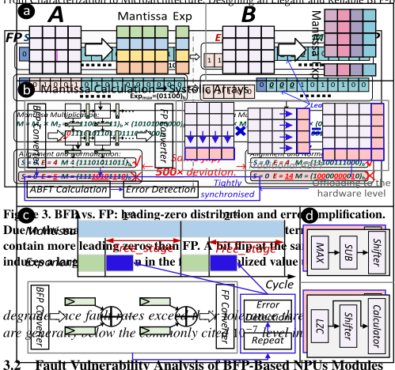
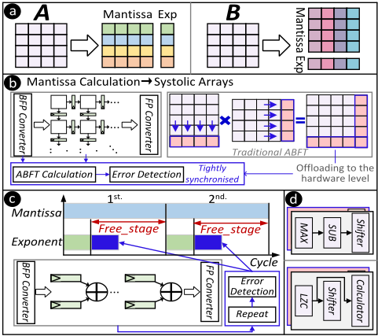
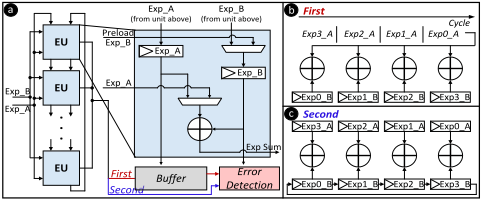
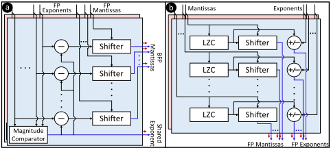
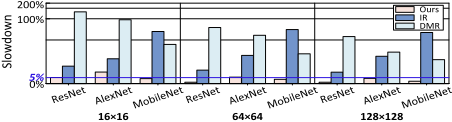
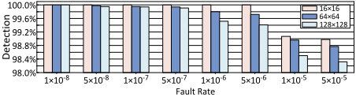
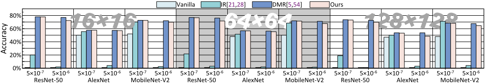
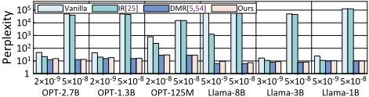

From Characterization to Microarchitecture: Designing an Elegant and Reliable BFP-Based NPU
从特征化到微架构：设计优雅且可靠的基于 BFP 的 NPU
简介
BFP（Block Floating-Point）凭借宽动态范围与高硬件效率已被 NVIDIA Blackwell、AMD Strix Point 等产品采用，但其在硬件故障下的脆弱性与功能安全适用性此前缺乏系统研究。本文开展首个 BFP NPU 的 RTL 级故障注入实证刻画：在 SRAM 读写锁存与流水线边界寄存器注入 permanent/transient 故障，发现共享指数会放大相关错误、高有效位 mantissa 因 LZC 归一化高度敏感，且传统 ABFT 在 BFP 非线性块缩放下误报飙升而失效。据此提出 row/column-wise 分块微架构，将定点 mantissa 计算映射到 systolic array、指数走独立标量短路径，分别部署轻量 ABFT、利用时序 slack 的时间冗余比对与 DMR 保护。设计基于 Gemmini 在 20 片 VU19P FPGA 上验证：达到接近 DMR 的可靠性，几何平均性能开销仅 3.55%，面积/功耗开销约 1.3%/2.81%，检测覆盖率 ≥98%、检测延迟亚微秒。其'特征化→定向轻量保护'的可靠性设计闭环对团队功能安全场景下的 IP 可靠性工作有方法借鉴价值。
问题
BFP 正在成为边缘 NPU 的新兴数据格式，但其在硬件故障下的行为与安全关键部署（如自动驾驶、工业控制，要求在毫秒级 FTTI 内检错）的适用性未被研究。BFP 的共享指数耦合块内元素（单比特指数翻转扭曲整块并传播放大相关误差），前导零驱动的归一化使高位 mantissa 翻转影响被放大；传统 ABFT 假设线性误差累积，在 BFP 非线性块缩放与共享指数归一化下误报飙升而失效。论文需回答'在哪里保护、如何保护'，并在面积/延迟/能耗预算内平衡保护覆盖率与开销。
方法
首先开展首个 BFP NPU 的 RTL 级故障注入实证研究：将故障点限定于 SRAM 读写锁存与流水线边界寄存器，用 2:1 mux 'saboteur' 包裹目标位，注入 permanent（stuck-at）与 transient（单周期翻转）故障，以 fault rate（每次推理注入故障数/系统总位数）参数化强度，按 bit/模块/路径层级刻画脆弱性，得出'非计算模块优先保护指数位、计算模块优先保护共享指数路径与高位 mantissa 段'的结论。据此提出与 BFP 计算语义对齐的容错微架构：row/column-wise 分块使 mantissa MAC 与指数路径完全解耦，mantissa 定点计算映射到标准 systolic array 并部署轻量 ABFT 定点校验（避免 FP 舍入误差导致的误报）；指数路径利用相对 mantissa 流水线的时序 slack，在空闲周期对同一加法做两次计算并比对（时间冗余），并将指数寄存器重构成环以避免常量输入掩盖永久故障；面积极小（0.2%）的 FP↔BFP 转换器直接采用 DMR+位级一致性检查。设计实现在 Gemmini 上，于 20 片 AMD Virtex UltraScale+ VU19P FPGA 组成的平台上部署 16×16/64×64/128×128 阵列进行验证。
关键结果
所提设计达到接近 DMR 的可靠性，几何平均性能开销仅 3.55%；对比基线：DMR 开销 20%~132%，IR 开销 10%~70%
硬件开销：面积 1.3%、功耗 2.81%；128×128 配置下功耗 WS 2.81%/OS 3.05%，面积 WS 1.30%/OS 1.80%（Synopsys Design Compiler v2019.12 + TSMC 28nm 库）
所有配置与故障率下错误检测覆盖率保持 ≥98%（极端故障率下略降）；各模块最坏检测延迟均低于 1 微秒（sub-microsecond）
故障率低于 10^-9 时模型保持基线性能；故障率超过 10^-8 时所有受测 LLM 完全失效
在 5×10^-8 故障率下，传统 ABFT 在 BFP 负载上的误报率大幅飙升而失效（INT8 下正常）
FP-to-BFP/BFP-to-FP 转换器仅占 NPU 面积 0.2%，故对其采用 DMR+位级一致性检查
row/column-segment 细分块仅带来约 2% 推理收益，却使 128×128 矩阵的保护硬件开销从约 1/128（矩阵粒度）升至约 1/4（分段粒度）
创新点
首个针对 BFP-based NPU 的深入可靠性实证研究；揭示传统 ABFT 在 BFP 非线性块缩放与共享指数归一化下因误报飙升而失效，说明不能直接移植 FP/INT 格式的保护方案；提出 reliability-hardware co-design 思路，将分块策略（row/column-wise vs matrix-wise vs segment-wise）、硬件映射与保护机制协同设计，使保护对齐 BFP 计算语义（定点 mantissa 校验 + 短指数路径时间冗余 + 微小转换器 DMR），以远低于 DMR/IR 的开销取得接近 DMR 的检测覆盖与保护效果。
团队参考意义
相关度级别：medium
命中能力域：2.1 IP 架构与微架构 | 2.4 设计验证方法学 | 2.6 仿真性能与加速器
理由：论文产品对象是 BFP-based NPU（AI 加速器），不属于团队的内存/互连 IP 产品线，ABFT、BFP 分块与 systolic array 保护等具体技术不能直接复用，因此不评 high。但论文'RTL 级故障注入→bit/路径级脆弱性特征化→按 PPA+可靠性协同选择保护机制'的完整闭环，与 2.1 中面向 PPA 的架构权衡方法相通；其故障模型定义（fault rate、permanent/transient、saboteur 插桩）与故障注入实验组织属于 2.4 验证方法学范畴；20 片 VU19P 的 FPGA 原型故障注入平台对应 2.6 的 FPGA 原型能力。论文明确引用 ISO 26262 与 FTTI 概念，团队若承接功能安全属性更强的 IP（如车规 LPDDR/UCIe），该方法是可借鉴的工程范式，故评 medium。
建议动作：作为方法参考存档
中文全文
arXiv:2604.10494v1 [cs.AR] 2026年4月12日
From Characterization to Microarchitecture: Designing an Elegant and Reliable BFP-Based NPU False Positive Rate 40% 60% 80% False Positive Rate 40% 60% 80%
Jie Zhang † 1、Jiapeng Guan § 1、Hao Zhou §、Xiaomeng Han †、Tinglue Wang †、Ran Wei ¶ 与 Zhe Jiang †∗
† 中国东南大学 § 中国大连理工大学 ¶ 英国兰卡斯特大学
0 20% 16×16 32×32 64×64 128×128 0 20% 16×16 32×32 64×64 128×128
Abstract
块浮点（BFP）正在成为边缘神经处理单元（NPU）极具吸引力的一种数据格式，兼具宽动态范围与高硬件效率。然而，其在硬件故障下的行为以及对安全关键部署的适用性仍未得到充分探索。本文首次对基于 BFP 的 NPU 开展了深入的实证可靠性研究。通过对 NPU 进行寄存器传输级（RTL）故障注入，我们的位级与路径级分析揭示了显著的异构脆弱性，并表明传统的端到端校验在非线性块缩放下会变得无效。基于这些洞察，我们设计了一种容错的基于 BFP 的 NPU 微体系结构，使 BFP 计算语义与可靠性约束相一致。该设计采用按行/列分块策略，将定点尾数计算与标量指数路径解耦，并为二者分别引入超轻量级保护机制。实验结果表明，我们的设计仅以 3.55% 的几何平均性能开销和不到 2% 的硬件成本，实现了接近双模块冗余的可靠性。
1 Introduction
块浮点（Block Floating-Point，BFP）[10, 64, 68] 是一种新兴的数据格式，正在现代边缘神经网络处理器（Neural Processing Unit，NPU）[11, 23, 24] 中获得越来越多的关注。在 BFP 中，一组元素构成的“块”共享一个公共指数，而每个元素保留自己的尾数。通过将块内指数对齐，尾数上的算术运算可以完全使用整数单元执行，每个块只需进行一次指数调整。这简化了乘累加（Multiply-and-Accumulate，MAC）数据通路和浮点（Floating-Point，FP）流水线的复杂度，与 IEEE-754 FP 格式相比提升了计算吞吐量和能效，因此已被众多工业产品广泛采用，例如 NVIDIA 的 Blackwell GPU [44]、AMD 的 Strix Point NPU [3] 以及 Tenstorrent 的 AI 加速器 [8]。
尽管性能提升推动了 BFP 的广泛采用，但可靠性对于边缘 NPU 同样至关重要，尤其是部署在安全关键场景中的 NPU，例如自动驾驶 [16, 40]、工业控制 [55, 59] 等。这意味着 NPU 必须对硬件故障具备弹性，并能够在狭窄的容错时间间隔（Fault Tolerant Time Interval，FTTI）内——通常以毫秒计——检测出错误，防止其升级为危害。
已有工作。先前的工作已针对采用传统数据格式（如 INT8/16 [33, 48]、FP16 [15, 42]、BF16 [15, 35]）的边缘 NPU 探索了多种容错技术。这些工作通常从离线可靠性分析入手（例如故障注入或解析建模 [15, 47, 48]），以识别脆弱的位、模块或流水线级。基于该分析，再开发并部署针对性的安全机制 [1, 6, 45]。
1 两位作者贡献相同。
∗ 通讯作者：Zhe Jiang。Email: zhejiang.uk@gmail.com。


例如，使用基于算法的容错（Algorithm-Based Fault Tolerance，ABFT）[2, 43, 52] 保护脉动阵列，采用冗余（例如硬件双模块冗余（Dual-Module Redundancy，DMR）[5, 54]，或软件指令冗余（Instruction Redundancy，IR）[29, 30, 60]），以及使用 ECC 或奇偶校验保护寄存器或存储单元 [39, 46]。尽管这些工作研究的数据格式各不相同，但其底层的 NPU 微体系结构和计算流程仍然相似。因此，它们的保护方案可以轻松适配到使用不同数据格式的 NPU 上。
挑战。与传统格式不同，BFP 重新定义了数据表示和计算流程，带来了现有保护方案无法覆盖的新的可靠性问题：
保护何处：BFP 的共享指数将各元素耦合在一起，这意味着单个指数位的位翻转便会扭曲整个数据块，并传播被放大的相关误差。相反，在 BFP 块中提取最大共享指数会使尾数相比传统浮点（FP）格式具有更大的位权，这可能导致尾数前导位的翻转主导整个数据块的数值贡献。要在层级结构（位、块、张量、层）上定量刻画这些误差动态并非易事：粗糙的模型会遗漏主导性失效，而细粒度分析的复杂度则会爆炸式增长。
如何保护：BFP 将指数与尾数处理解耦，这要求重新思考容错机制的部署方式。如图 1 所示，传统的矩阵级方案（例如基于算法的容错（ABFT））假设误差线性累积，而该假设在 BFP 的非线性块缩放与共享指数归一化下并不成立。挑战在于设计一种 BFP 感知的保护机制：既要保持 BFP 的计算效率，又要有选择地保护对误差最敏感的组件，同时还要在 NPU 严格的面积、延迟与能耗预算内运行。在保护覆盖率与性能开销之间取得这种平衡，是实现可靠的基于 BFP 的 NPU 面临的一个关键开放性问题。
贡献。我们通过对基于 BFP 的 NPU 开展首个深入的可靠性研究来应对这些挑战。利用 RTL 级故障注入，我们在代表性模型上刻画了跨模块、跨故障强度的失效模式与容忍阈值，揭示了关键的位级/路径级脆弱性：共享指数会放大相关误差，而高位尾数位则由于
Conference'17, Washington, DC, USA 2026. ACM ISBN 978-x-xxxx-xxxx-x/YYYY/MM https://doi.org/10.1145/3770743.3804101

前导零驱动的归一化而变得敏感。在这些观察的指导下，我们提出了一种符合 BFP 语义、面向流水线的可靠性原则以及按行/列的硬件映射方式，将计算解耦为定点尾数阵列与一条较短的标量指数流水线；我们利用指数路径的时间裕量实现低开销的重算-比较（recompute-and-compare），执行定点局部一致性检查，并对紧凑的格式转换单元进行加固。评估结果表明，我们的设计以 3.55% 的平均性能开销（相比之下，DMR 为 20% 至 132%，IR 为 10% 至 70%）、1.3% 的面积开销和 2.81% 的功耗开销，实现了接近 DMR 的鲁棒性，检测覆盖率 ≥ 98%，延迟为亚微秒级。
2 Preliminary: the Mechanics of BFP
块浮点（BFP）是一种高效的数据格式，旨在平衡宽动态范围与定点格式的硬件效率。对于由 𝑁 个数组成的块 𝑋 = { 𝑥 0 , 𝑥 1 , . . . , 𝑥 𝑁 - 1 }，每个元素定义为：
BFP 格式通过共享一个公共指数 𝑒 𝑠ℎ 来表示该数据块。该共享指数通常选取为块内所有指数的最大值，即 𝑒 𝑠ℎ = max0 ≤ 𝑖 ≤ 𝑁 - 1( 𝑒 𝑖 ) 。转换之后，该数据块可以表示为：
其中 𝑚 ′ 𝑖 是对齐后的尾数，通过将原始尾数 𝑚 𝑖 右移 ( 𝑒 𝑠ℎ - 𝑒 𝑖 ) 位得到。
两个 BFP 格式的 𝑁 维向量 𝐴 和 𝐵，其共享指数分别为 𝑒 𝐴 和 𝑒 𝐵，二者的点积计算如下：
如式 (3) 所示，BFP 将点积分解为共享指数加法 ( 𝑒 𝐴 + 𝑒 𝐵 ) 和定点尾数点积。与传统浮点（FP）中这种分离仅局限于运算级不同，BFP 将其提升到了宏观的块级。
3 Observations: BFP Resilience Characterization
为了精确刻画基于 BFP 的机器学习工作负载在 NPU 硬件故障下的行为，我们在一组具有代表性的 DNN [26, 27, 36, 38, 53, 57, 58] 和 LLM [12, 65] 上开展了系统性的故障注入实验。通过定量分析各注入配置下的失效模式与端到端性能退化，我们划定了 BFP 的容错边界，并为第 1 节提出的关键问题提供了分析性见解。
故障注入设置。与先前在软件层面对逐层输入或输出施加扰动的研究 [50, 56, 61] 不同——这类方法抽象掉了细粒度的计算与数据搬运，所产生的扰动模式与实际硬件故障并不一致——我们在 RTL 层级注入故障，以系统性地分析脆弱性。我们将故障位点限定在 BFP 数据通路上的 SRAM 读/写锁存器和流水线边界寄存器，而非对 NPU 的每一个门电路进行插桩。这遵循了常见的错误模型，即将单事件翻转视为存储元件中的位翻转，而不考虑未被锁存的组合逻辑瞬态 [17, 62]。我们之所以针对这些位置，是因为它们存储了架构上可见的 BFP 状态并决定了软件观测到的结果，同时使故障注入的复杂度保持在可控范围内。
我们建模了两类典型的故障：永久性故障，即在每次推理中将某一位强制为 stuck-at-0/1；以及瞬态故障，即将该位在一个随机时钟周期内翻转。每个候选位都被一个 2:1 多路选择器"saboteur" [9, 20] 包裹，该多路选择器通常转发原始值，而在注入期间输出强制的 0/1（永久性故障）或原始位与独热掩码异或后的结果（瞬态故障）。注入强度由故障率参数化，其定义为每次推理注入的故障数除以系统中位元的总数，故障位置与时机以伪随机方式选取。由于 FPGA 原型无法承载大型 LLM，LLM 的故障注入实验使用一个具备硬件语义的软件仿真器，其在相同的故障率配置下复现 RTL 的故障行为。
3.1 Analysis of BFP-Based Machine Learning Workloads
利用前述的故障注入方法，我们在神经网络处理器（NPU）故障注入下评估了具有代表性的深度神经网络（DNN）与大语言模型（LLM）。如图 2(a) 和 2(b) 所示，在足够低的故障率下（例如低于 10⁻⁹），这些模型能够保持基线性能；然而，随着故障率升高，DNN 的准确率逐渐下降，而 LLM 的困惑度急剧上升，当故障率超过 10⁻⁸ 时，所有受测 LLM 均完全失效。尽管块浮点（BFP）能够降低硬件复杂度，但它并未在故障韧性方面提供固有改进——一旦故障率超过模型的容忍阈值，性能便会迅速恶化。这一观察结果与以往针对传统浮点（FP）模型的研究发现一致 [4, 7]。鉴于现代计算密集型器件中的静默故障率通常超过 10⁻⁷ [19]，这种固有的容忍能力显然不足以确保准确运行。Insight-1：基于 BFP 的 NPU 需要可靠性保障，因为 BFP 不具备固有韧性，模型可能会灾难性地 我们向不同的基于 BFP 的 NPU 微架构模块注入故障以分析其脆弱性。计算模块与非计算模块在数据流中扮演着根本不同的角色：计算类模块组（如 MAC/ALU 流水线）执行算术运算，瞬态故障会经由累加迅速放大；而非计算类模块组（如片上存储器、缓冲区）负责存储和传输数据，故障往往持续存在并被反复使用。这些差异造成了不同的失效模式，并自然地要求采用不同的保护机制。因此，我们将分析划分为计算组与非计算组并分别进行评估，从而得到一种面向可靠性的抽象，它既能捕捉主要的脆弱点，又避免了逐模块分析带来的维度爆炸。
从特征分析到微架构：设计优雅且可靠的基于 BFP 的 NPU

非计算模块。在故障率高达 10⁻⁷ 的非计算模块中（图 2(c)），BFP 尾数很少导致推理失败，而指数位翻转则是性能退化的主要驱动因素，这与针对传统 FP 格式的观察结果一致 [13, 40]。其原因在于，非计算单元中的尾数扰动通常表现为有界的幅值偏移，而指数错误会将数值按 2ⁿ 重新缩放，从而产生极端值。
计算模块。图 2(d) 显示，由于共享指数设计，BFP 指数故障造成的偏差远大于 FP：单次扰动会统一地重新缩放块内所有元素，使所有部分积产生一致的偏移，累加运算进而放大误差，导致结果突然出现尖峰、IEEE-754 异常（Inf/NaN）以及推理失败。对于尾数故障，我们在 5 × 10 - 7 的故障率下分析了尾数通路上中间结果寄存器的敏感度。该寄存器在 FP 和 BFP 中均被位宽扩展至 22 位，我们将其划分为四个连续的有效位段：Q1（最低有效的 6 位）、Q2（接下来的 6 位）、Q3（再接下来的 5 位）和 Q4（最高有效的 5 位）。图 2(e) 和 2(f) 显示，BFP 尾数故障造成的性能退化远超 FP，其中以最高有效位段 Q4 中的错误为主。
BFP 与 FP 之间的差异源于二者不同的计算通路。BFP 遵循第 2 节中的计算模型，由一次块后归一化随后恢复最终的指数和尾数。在计算之前，BFP 量化会对尾数进行右移，从而产生前导零偏置。经由前导零计数器（LZC）进行的归一化使这一模式对高位比特翻转高度敏感。如图 3 所示，翻转十个前导零中的第一个会使 LZC 从 10 骤降为 0，使指数增加 10；而 FP 的隐含前导位限制了前导零的数量，使指数漂移缩小 500 倍以上。流水线顺序也有所不同：FP 持续进行尾数对齐与归一化，而 BFP 先执行块级尾数计算，然后再施加一次统一的归一化。因此，在 BFP 中，归一化使得尾数误差能够扰动输出指数，这导致了一种假设，即“仅保护指数通路”便已足够。而对尾数计算通路的针对性加固同样是必需的。Insight-2：BFP 在不同模块中的位级脆弱性要求差异化的加固优先级。在非计算模块中，应优先保护指数位。在计算模块中，应优先保护共享指数通路以及执行单元内位宽扩展后的尾数的高有效位段。

3.3 Analysis of BFP Stream Processing in BFP-Based NPUs
在典型的基于 BFP 的 NPU 数据通路 [11, 14, 22, 66] 中，计算模块两侧均设有 FP-BFP 转换器。这种常见的工业设计出于效率考虑将 BFP 限定于内部 MAC，同时在边界处保留 FP，以支持高精度非线性运算（如 softmax）并兼容现有的 FP 软件栈。流水线被这些由 BFP 引入的阶段自然地分段，形成结构边界，这些边界随后可作为可靠性机制的锚点。
对 BFP 计算逻辑的考察表明，当指数与尾数被映射到相互解耦的硬件通路上时，二者的处理在结构与验证复杂度上呈现高度不对称性。在向量计算过程中，尾数穿越 MAC 流水线以完成点积运算，而指数仅需一次标量加法，使得指数通路很短且拥有充裕的周期裕量。与此同时，尾数在点积数据通路上始终处于定点域，从而无需重构 FP 结果即可实施轻量级的定点校验。相比之下，对重构后的 FP 输出进行端到端的统一校验，则必须协调归一化、对齐与舍入，这会增加校验器开销与误报，从而降低有效性（见图 1）。这些观察表明，使 BFP 硬件映射与可靠性约束相匹配，是构建优雅且可靠的基于 BFP 的 NPU 的关键。

Insight-3：通过细粒度的硬件映射与特征感知保护，使 BFP 计算语义与可靠性约束相匹配，即可开发出高性价比且可靠的基于 BFP 的 NPU 解决方案。
4 Microarchitecture
基于第 3 节的分析，我们提出一种基于 BFP 的 NPU，利用 BFP 的特性实现低开销的可靠性。该设计使修改后的硬件直接与 BFP 计算语义对齐，从而实现高效且开销极小的保护机制。从可靠性角度来看，即时故障检测对于防止系统失效至关重要 [31, 32]。这一优先级已在 ISO 26262 [32] 中被明确规定，该标准对故障检测提出了严格的、与安全等级相关的要求。因此，我们的工作聚焦于开发高效的故障检测机制。一旦检测到故障，系统即可通过成熟的安全管理框架转入安全状态并执行纠正措施。
BFP 分块策略与硬件映射。利用 BFP 的特性，我们通过合适的分块策略设计其硬件算子。BFP 的共享指数特性天然契合向量点积，使其与脉动阵列兼容。如图 4.a 所示，我们提出一种高度兼容的分块策略：左矩阵按行分块，右矩阵按列分块，每个向量被量化为具有共享指数的 BFP 块。这使得结果计算等价于 BFP 行向量与列向量的点积。由于最终指数等于各向量共享指数之和，尾数 MAC 与指数路径完全解耦。这一关键解耦带来多项微架构优势：(i) 尾数点积任务可直接映射到标准定点脉动阵列与向量单元，无需改变关键结构即可保持与传统 NPU 硬件的兼容性；(ii) 将指数与尾数流水线分离，可利用二者不同的敏感性特征实现独立且有差异的保护方案；(iii) 尾数保护简化为定点保护，避免了传统浮点（FP）路径中因舍入误差导致的误报与漏检。此外，一旦与尾数解耦，指数即可通过简单求和获得，仅需少量加法器。

保护理念。上述映射能够以极小的开销实现全面的可靠性。首先，尾数计算被转换为定点形式并在脉动阵列上执行。由于尾数计算对端到端推理影响显著，且基于算法的容错（ABFT）对定点计算是无偏差的，我们在硬件中部署轻量级 ABFT 校验器来保护尾数路径（图 4.b）。相比之下，指数计算仅使用少量加法器，且远快于尾数计算。利用相对于尾数流水线的时序裕量，每个加法器在空闲周期内执行两次求值并比较结果，从而提供时间冗余的故障检测（图 4.c）。对于 FP-to-BFP 与 BFP-to-FP 转换器，我们的测量结果表明其面积仅占 NPU 的 0.2%。对于这类面积小且不可分割的关键模块，双模冗余（DMR，图 4.d）成为合理且可实现的解决方案。
4.1 Reliability of the Mantissa Compute Module
通过将 BFP 尾数计算映射到脉动阵列上，对该路径的保护便归结为对定点脉动阵列进行加固。在 NPU 中，两种常见的数据流模式是权重固定（Weight-Stationary，WS-M）和输出固定（Output-Stationary，OS-M）：在 WS-M 中，权重矩阵 𝐵 被预加载到脉动阵列中，而输入矩阵 𝐴 以流的形式流经阵列；在 OS-M 中，偏置矩阵 𝐶 被预加载，𝐴 和 𝐵 均以流的形式输入。对于定点计算路径，我们采用基于算法的容错（ABFT）进行验证：通过附加行/列校验和，在生成结果的同时产生一组结果校验和（图 5 上部）。为了在不干扰数据流的前提下使校验“在途”（in-flight）进行，我们在 𝐴 的尾部附加一个校验和向量，并在 OS-M 模式下激活额外的校验 PE（check-PE）以实现流水线内的同步验证。
保护机制。该机制（图 5）与脉动阵列的原始数据流紧密集成。在 WS-M 中，我们在阵列入口处放置一列加法器-寄存器单元，对流式输入的矩阵 𝐴 的各列进行即时累加，生成一个校验向量，该向量被附加到 𝐴 并插入同一数据流中。通过脉动传播，校验和到达阵列底部，在那里由一个累加器计算所得结果的总和，并由一个比较器将结果校验和与该总和进行比对，从而提供原位结果验证（图 5：蓝色区域）。在 OS-M 中，输出在 PE 内部累加。为支持流式验证，我们增加了（i）底部一行校验 PE，以及（ii）一条位于左边缘的按列累加链，该链在每个周期对各列输入进行级联与累加，就地生成校验分量。通过将链深度与阵列延迟进行相位对齐，这些分量恰好在校验向量被插入的时刻到达校验 PE 的输入端，校验 PE 随即生成与输出对齐的结果校验和，并立即执行比较与错误检测（图 5：红色区域）。该机制仅增加两个额外周期——一个用于插入校验向量，另一个用于执行最终比较。此外，依据第 3 节中的 Insight-2，部署在我们检测系统之上的纠错机制可被设计为忽略那些影响微乎其微的位。
从表征到微架构：设计优雅且可靠的基于 BFP 的 NPU

4.2 Reliability of the Exponent Compute Module
4.3 Reliability of the Data Format Converter
FP-to-BFP 转换器以分块方式工作，计算共享指数并相应地对齐各尾数。对于每个块，数值比较器首先确定块内最大指数。接着，减法器推导出每个元素的相对移位量。最后，移位器对相应的尾数进行右移，对齐后的尾数与共享指数组合形成 BFP 表示（图 7. a）。在反向路径中，BFP-to-FP 转换器将 BFP 结果恢复为标准 FP 格式。前导零计数器（LZC）产生归一化每个尾数所需的位移量。在该位移量的引导下，移位器对尾数施加所需的调整，同时指数更新单元相应地更新输出指数以完成归一化（图 7. b）。保护机制。由于第 3 节揭示了尾数在非计算路径上的较低关键性，可以对转换器内的尾数应用轻量级模糊保护：在 FP-to-BFP 转换器中，验证移位过程中 FP 隐含前导位的保真度以及 BFP 对齐后新引入的前导零的正确性；在 BFP-to-FP 转换器中，正确性检查仅限于 BFP 尾数中第一个有效 '1' 之后紧邻的一小段位窗口，这些位在转换后映射到 FP 尾数的最高有效位。然而，标准单元门级综合显示这些转换器仅占 NPU 面积的 0.2%。因此，即使具备这些有益特性，由于优化前的开销本已很小，实际收益微乎其微，这颇具讽刺意味地导致了不利的精度-可靠性权衡。因此，采用位级一致性检查的双模块冗余（DMR）成为直接而合理的选择。

4.4 Discussion on the Blocking Design Trade Off
我们将 BFP 的行/列级分块策略与两种常见替代方案进行对比：矩阵级 [22, 37]（整个矩阵共享一个指数）和行/列段级 [67]（矩阵的每一行或每一列被划分为若干段，每段拥有各自的共享指数），以说明行/列级为何能在硬件映射与可靠性设计之间提供合适的对齐。
矩阵级。虽然矩阵级共享指数能最大化复用，但它显著降低了推理性能（图 8）。更重要的是，它带来的实际资源收益微乎其微。相对于行/列级，矩阵级仅减少了指数计算硬件，且其流水线延迟远短于尾数路径。因此，尽管我们的可靠性机制可以轻松移植到这种映射上，但其成本-收益表现并无实质优势。
行/列段级。更小的分块确实能在模型性能上带来适度提升（见图 8），但代价是两项巨大的开销。(i) 在微架构层面，它不够友好：行/列段打破了主流脉动阵列 NPU [18, 34] 的按行调度假设。由于需要对齐来自不同分块的指数结果，数据通路和控制流必须重新设计，使硬件与这种细粒度分块紧密耦合。(ii) 在可靠性方面，故障检测逻辑带来的硬件开销快速增长。由于指数和尾数在行/列段级别被重新划分，共享单元和中间寄存器的脆弱性也在这一粒度上显现：如果保护仍部署在矩阵粒度上，检测效果会打折扣；如果改为在行/列段粒度上部署，则每个行/列段都必须配备检测逻辑，导致开销随分块尺寸缩小而急剧增加。在一个 128 × 128 矩阵中，将每行/每列按四个元素划分，会使硬件开销从矩阵粒度下的 ≈ 1 128 提升至行/列段粒度下的 ≈ 1 4。然而，这些巨大的代价仅换来微不足道的推理增益（图 8 中 ≈ 2%）。


相比之下，行/列级 (i) 与现有 NPU 的按行调度模型相契合，使可靠性机制能够部署在阵列粒度上，在不牺牲检测精度的前提下降低开销；(ii) 同时保持了良好的模型级性能。因此，它在硬件映射与可靠性设计之间提供了一个更为合理的收敛点。
5.1 Experimental Setup
5.2 Observations and Results Analysis
(1) 性能开销。图 9 给出了不同故障检测方案的性能开销。为了公平比较，所有基线均在等面积约束下进行评估，并与所提出的硬件实现相匹配。总体而言，双模冗余（DMR）由于大规模的硬件复制而具有最大的开销（20% ∼ 132%）；此外，随着阵列规模增大和脉动阵列利用率下降，DMR 的相对开销也相应降低。IR 的开销适中（10% ∼ 70%），且与计算密度密切相关。相比之下，所提出的方法仅增加很小的开销（几何平均值为 3.55%）。这表明所提出的方案具有显著更低的性能代价，优于 DMR 和 IR。(2) 检测覆盖率。图 10 展示了所提出方法的错误检测覆盖率。在所有配置和故障率条件下，错误检测覆盖率均保持在 98% 以上，仅在极端故障率场景下出现轻微下降。这归因于该设计利用了块浮点（BFP）计算的特性，将基于浮点（FP）的检查转换为定点检查。这种方法避免了因 FP 计算中的舍入误差而导致的不同计算路径之间结果不一致的问题。
| Configuration | Mantissa compute | Exponent compute | FP-to-BFP | BFP-to-FP |
|---|---|---|---|---|
| 16 × 16 | 0.098 𝜇 s | 0.064 𝜇 s | 0.014 𝜇 s | 0.008 𝜇 s |
| 64 × 64 | 0.390 𝜇 s | 0.250 𝜇 s | 0.018 𝜇 s | 0.008 𝜇 s |
| 128 × 128 | 0.750 𝜇 s | 0.524 𝜇 s | 0.020 𝜇 s | 0.008 𝜇 s |
| Configuration | Mantissa compute | Exponent compute | FP-to-BFP | BFP-to-FP |
| Configuration. | 16 × 16.WS | 16 × 16.OS | 64 × 64.WS | 64 × 64.OS | 128 × 128.WS | 128 × 128.OS |
|---|---|---|---|---|---|---|
| Overhead (Power) | 22.36% | 23.48% | 4.80% | 6.33% | 2.81% | 3.05% |
| Overhead (Area) | 9.40% | 17.00% | 2.53% | 3.82% | 1.30% | 1.80% |
| Configuration. | 16 × 16.WS | 16 × 16.OS | 64 × 64.WS | 64 × 64.OS | 128 × 128.WS | 128 × 128.OS |
(3) 模型性能。图 11 和图 12 展示了在不同配置和故障率下、采用各种保护方案时深度神经网络（DNN）和大语言模型（LLM）模型的性能。与 Vanilla 基线（无保护）相比，IR 在低故障率下能提供适度的保护，但其有效性在较高故障率下迅速下降。DMR 凭借其全面的冗余方案，在不同故障率和配置下始终表现出最佳的保护效果。相比之下，所提出的方法在低故障率下实现了与 DMR 相当的保护性能，在较高故障率下仅次于 DMR，展现出出色的容错能力。
（4）检测延迟。我们评估了最坏情况下的错误检测延迟，即从指令启动到错误检测之间的时间间隔。如表1所示，指数模块和尾数模块的延迟随矩阵规模的增大而增加，这是因为更大的矩阵规模涉及更多的数据和更复杂的计算，从而导致延迟增加。相比之下，FP-to-BFP和BFP-to-FP转换器的延迟更短，且几乎不随配置变化，因为其向量级流水线的级数是固定的。尽管延迟会随计算规模的增大而增加，但所有测得的延迟均保持在亚微秒量级，证明了该保护方案的高效性。
（5）硬件开销。我们使用Synopsys Design Compiler（v2019.12）和工业标准的TSMC 28nm工艺库来测量硬件开销。如表2所示，在更贴合工业部署的128 × 128配置下，我们的方案仅引入 ≈ 3% 的功耗开销（WS：2.81%，OS：3.05%）和 1% ∼ 2% 的面积开销（WS：1.30%，OS：1.80%）。这些结果表明，该方案的线性开销在更大规模的阵列上被有效摊薄，从而以极小的硬件预算实现了可靠性。
从表征到微架构：设计优雅且可靠的基于BFP的NPU


6 Conclusion
本文提出了一条实现可靠的基于块浮点（BFP）的神经处理单元（NPU）的路径。我们表明，有效保护无法通过直接移植浮点（FP）/整数（INT）方案获得，而必须与BFP的数值特性和硬件映射协同设计。基于系统性的寄存器传输级（RTL）可靠性研究，我们首先通过识别不同单元中占主导地位的模块级与位级脆弱性，回答了“在哪里保护”的问题。利用这些洞察，并进一步分析BFP的分块缩放与流式处理特性，我们追溯了传统方案在共享指数归一化下失效的根源，提出了一种重新对齐分块、映射与保护的可靠性-硬件协同设计，从而回答了“如何保护”的问题，最终以极小的代价实现了一个优雅且可靠的基于BFP的NPU。
7 Acknowledgement
我们谨向审稿人提出的有益反馈表示感谢。本工作得到国家重点研发计划（项目编号：2024YFB4405600）、江苏省基础研究计划（项目编号：BK20243042）以及中央高校基本科研业务费专项资金（项目编号：2242025K20013）的资助。